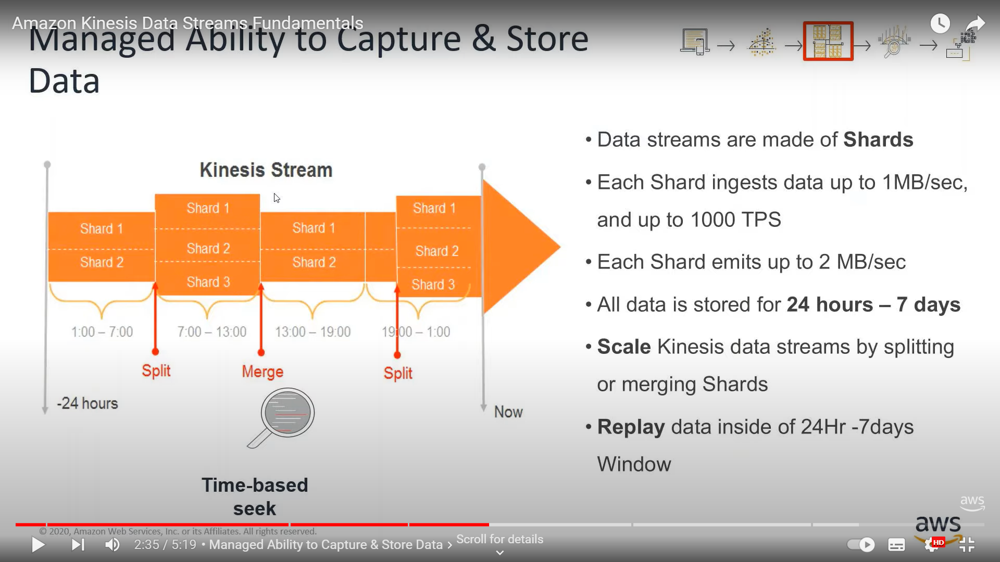
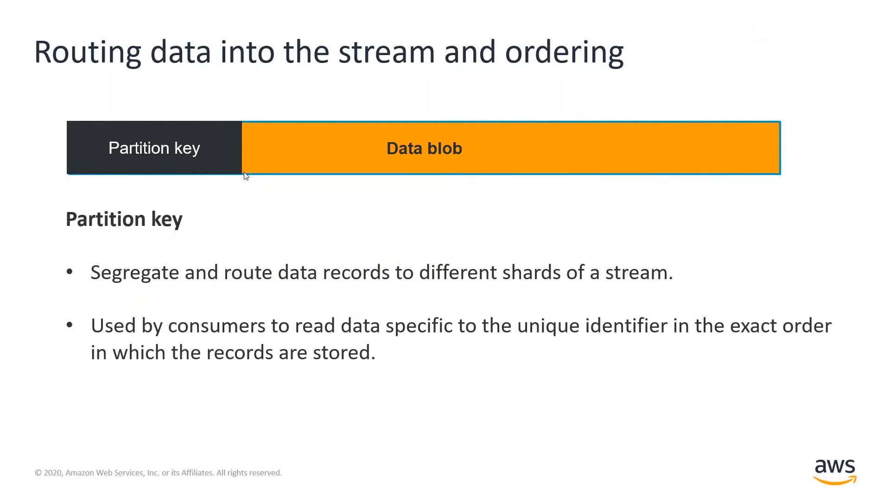
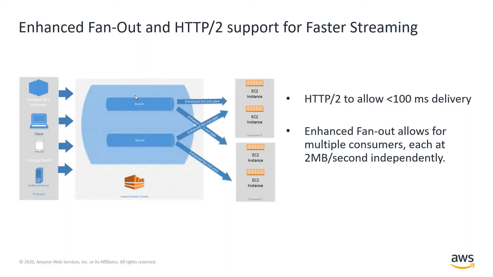

Collection
Ongoing collection
- If the data streams must be stored for at least 3 days, you must use Kinesis Data Streams which has a configurable data retention of between 1 and 365 days.
- The KPL has the mechanisms in place for retry and batching, as well as asynchronous mode.
- The Kinesis agent is meant to retrieve server logs with just configuration files.
- Lambda can be a consumer for Kinesis Data Streams (KDS) but not for Kinesis Data Firehose (KDF). However, for transformation needs, Lambda can be used in conjunction with KDF.
Kinesis Data Streams
- KDS with provisioned capacity does not scale as the load increases.
- With on-demand scaling, KDS can be used for scaling with increasing data, but if the processing times are in minutes (not seconds), a different approach (such as SQS) could be required.
- For ongoing data collection and when configurable data retention is required, choose Kinesis Data Streams over Kinesis Data Firehose.
- KDS can replay data to handle downstream failures.
Kinesis Data Stream allows Data replays (in the same order). SQS does not allow data replays, and DynamoDB would allow to replay some data, but it’d be difficult to get some ordering constraints working as well as well as enable real time use cases.



Kinesis Data Firehose
- Using KDF, data can be sinked into S3, Redshift, ElasticSearch or Splunk.
Data Migration Service (DMS)
- DMS support Apache Parquet format when migrating data to S3.
Cost
- KDS: You pay per shard hour and per PUT payload unit. Optionally, there are fees associated with extended data retention and enhanced fan-out, if you choose to use those features.
- KDF: You pay for the volume of data you ingest using the service and for any data format conversions.
- DMS: You pay for compute resources (depending on instance type) used during the migration process and any additional log storage. There are also potential data transfer fees.
- Glue: With AWS Glue, you pay an hourly rate, billed by the second, for crawlers (discovering data) and ETL jobs (processing and loading data).
Delivery Guarantees
- Amazon SQS (FIFO) and Amazon DynamoDB streams provide exactly-once delivery. All other AWS services provide at-least-once.
- All services listed (i.e. KDS, DynamoDB Streams, Amazon MSK and SQS FIFO) support exactly once delivery, except for Kinesis Data Firehose (KDF) and Amazon SQS (Standard).
Transform and filter data during collection process
- Use Lambda to transform data that is in KPL or GZIP into JSON or CSV for Kinesis Data Analytics.
- Data Enrichment
- String Transformation
- Data Filtering
- Use KDF Transformation to batch, compress, and encrypt data before loading it.
- DMS can be used for schema conversions.
- It also supports Apache Parquet format when migrating data to Amazon S3.